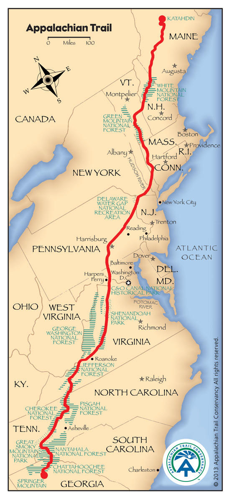

The Appalachian Trail, also known as the AT is a footpath extending nearly 2,200 miles in the eastern United States. The idea for the trail started with Benton MacKaye in 1921. The trail was initially completed in 1937. The trail runs through 14 states on its way from Georgia to Maine. I have been enamoured by the trail since visiting the Smoky Mountains as a kid and seeing the signs at Newfound Gap. I had no idea a person could walk that far on a trail!
Since 2011 I have been hiking sections of the AT. My goal is to complete the entire trail in my lifetime. So far I've only done about 325 miles so I have a LONG way to go!
Click on the links below for each state to hear more about my adventures:
